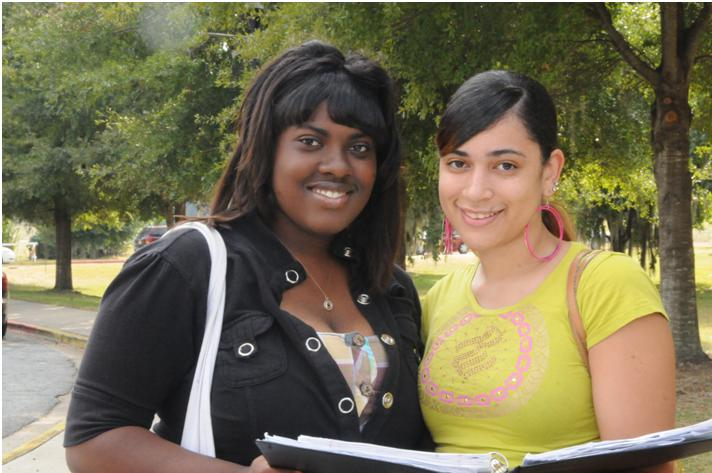

The Department of Behavioral Sciences offers degrees in psychology and sociology.
Bachelor Of Arts Degree In Psychology
Bachelor Of Arts Degree In Sociology
PSYCHOLOGY
The major in Psychology provides courses that lead to a Bachelor of Arts degree in psychology. The student who majors in psychology gains a fundamental understanding of the principles of human thought, emotion and behavior programs. In addition to the program’s emphasis on psychological factors and human learning, biological and social determinants of human behavior are also emphasized as well as research methods. This broad based training prepares students to understand, evaluate and influence their own behavior as well as the behavior of others. Because psychology is relevant to numerous fields, job opportunities for psychology majors are diverse and include employment in such areas as business and industry, educational settings, mental health agencies and hospitals, governmental agencies (including the military and law enforcement), etc. Students who plan to become professional psychologists or mental health practitioners will be prepared to continue their education in order to obtain a graduate degree in one of the more than 50 areas of specialization within psychology. The Psychology program is a member of the Council of Undergraduate Programs in Psychology. Departments with undergraduate programs in psychology, in institutions accredited for such purposes by their regional accrediting association, are eligible for membership on the council.
The major in Psychology requires:
SOCIOLOGY
The major in Sociology provides courses that lead to a Bachelor of Arts degree in sociology. The sociology program offers a variety of courses designed to enhance the knowledge of socio-cultural environments, human social behavior and social groups. In contrast to psychology, which focuses on individual behavior, sociology examines human behavior at the group level. Sociologists attempt to explain how and why society changes over time, and how and why societies differ from one another. The program of study in sociology provides students with adequate changes over time, and how and why societies differ from one another. The program of study in sociology provides students with adequate competencies for successful graduate study in sociology, other related behavior sciences, gerontology and religion. The degree provides some employment options at the bachelor’s level and by carefully selecting sociology and allied electives, students can enhance their employment possibilities. Sociology majors can also pursue a dual degree with either psychology or social work as the second major.
The major in Sociology requires:
MINORS IN PSYCHOLOGY AND SOCIOLOGY
The Department of Behavioral Sciences also offers minors in psychology and sociology. The department offers minors in psychology and sociology to enhance employment opportunities and/or preparation for graduate school. Each of the minors requires eighteen (18) semester hours of lower and upper level courses. A minor program requires eighteen (18) semester hours in upper level prescribed courses along with elective courses.
MINOR IN PSYCHOLOGY
Psychology 18 hours
MINOR IN SOCIOLOGY
Anthropology 18 hours
Gerontology 18 hours
Sociology 18 hours
Urban Studies 18 hours
Area Credit Hrs
Core Curriculum (60 hours)
AREA A1 Communication Skills 6
AREA A2 Quantitative Skills 3
AREA B Institutional Options 5
AREA C Humanities, Fine Arts and Ethics 6
AREA D Natural Science, Math & Tech 10-11
AREA E Social Sciences 12
AREA F Courses Related to Major 18
1000-2000 level Grade “C” or better
PSYC 1101 General Psychology (3 hrs)
PSYC 2203 Professions of Psychology (3 hrs)
PSYC 2295 Psychology of Adjustment (3 hrs)
PSYC 2270 Psychology of Ethics (3 hrs)
Area F - Choice (Select 6 hours) Grade of “C” or Better
SOCI 2601 Urban Social Problems (3 hrs)
ECON 2201 Survey of Economics (3 hrs)
SSCI 2402 Microcomputers in the Social Sciences (3 hrs)
MDLG Foreign Language (Option) (3 hrs)
PSYC 1001 Study Management (3 hrs)
PSYC 4400 Applied Health Psychology (3 hrs)
Above The Core (5 hours)
Area G - (Required Major Courses 15 Hours) Grade of “C” or better (15 hours)
PSYC 4300 Behavioral Statistics 3
PSYC 4304 Behavioral Research 3
PSYC 4305 Experimental Psychology 3
PSYC 4465 History and Systems (req.) 3
PSYC 4499 Psychological Seminar 3
Major Electives (3000-4000 level) (27 hours)
Supportive Courses (6 hours)
Any advisor-approved courses in the area of sociology, criminal justice, economics,
political science, social work, allied health sciences and education. A grade of “C” or better is required.
General Electives (8 hours)
Total required for graduation (121 Hours)
123 Semester Hours
Freshman Year Fall Spring
ENGL 1101 Composition I 3
ENGL 1102 Composition II 3
PSYC 1101 General Psychology 3
MATH 1111 College Algebra or
MATH 1101 Math Modeling 3
COMM 1100 Fundamentals of Public Speaking
ASU 1201 Foundations of College Success 2
HIST 1002 Intro. to the African Diaspora 2
PEDH (1001 - 1007) (any courses available) 2
Area D Option 3
MUSC 1100 Music Appreciation 3
SOCI 2031 Intro. to Anthropology 3
HEDP 1001 Intro. to Wellness 1
Total (15 hours) (16 hours)
Sophomore Year
ENGL 2111 World Literature I 3
PHYS 1111K Intro. to Biology
or PHYS 1001K Physical Science 4
SSCI 2402 Microcomputers In the Social Sciences 3
PSYC 2295 Psychology of Adjustment 3
Area D Science 3-4
ECON 2105 Principles of Macro Econ. 3
HIST 1111 Survey of World History I (required) 3
SOCI 2011 Principles of Sociology (Required) 3
POLS 2101 Intro. to Political Science 3
PSYC 2203 The Profession of Psychology 3
Total (16 hours) (15-16 hours)
Junior Year
PSYC 2290 Foundations of Learning and Motivation 3
PSYC 2270 Psychology of Ethics 3
SOCI 2601 Urban Social Problems 3
PSYC Elective 3
MDLG Foreign Language (Option) 3
PSYC 2275 Interviewing Strategies 3
PSYC 4300 Behavioral Statistics 3
PSYC Electives 9
Total (15 hours) (15 hours)
Senior Year
PSYC 4304 Behavioral Research 3
PSYC 4305 Experimental Psyc. 3
PSYC 4499 Psychological Seminar 3
PSYC 4470 Practicum in Psychology 3
Psychology Electives 6
PSYC 4465 History and Systems (Req.) 3
PSYC Electives 9
Total (15 hours) (15 hours)
Area Credit Hrs
Core Curriculum (60 hours)
AREA A1 Communication Skills 6
AREA A2 Quantitative Skills 3
AREA B Institutional Options 5
AREA C Humanities, Fine Arts and Ethics 6
AREA D Natural Science, Math & Tech 10-11
AREA E Social Sciences 12
AREA F Courses Related to Major 18
Grade of “C” or better 1000-2000 level
SOCI 2011 Principles of Sociology (3 hrs)
SOCI 2601 Urban Social Problems (3 hrs)
SOCI 2031 Introduction to Anthropology (3 hrs)
PSYC 2203 The Profession of Psychology (3 hrs)
Area F - Choices (Select 6 hours) Grade of “C” or better (3 hrs)
SSCI 2402 Microcomputers in the Social Sciences (3 hrs)
ECON 2201 Survey of Economics (3 hrs)
POLS 2102 Introduction to Law (3 hrs)
POLS 2101 Introduction to Political Science (3 hrs)
MDLG Foreign Language (Choice of Language) (3 hrs)
Above The Core (5 hrs)
Area G - (Required Major Courses 15 hours) Grade of “C” or better
SOCI 4300 Behavioral Statistics 3
SOCI 4304 Behavioral Research 3
SOCI 4451 Social Theory 3
SOCI 4454 Sociology Seminar 3
SOCI 3321 Population Problems 3
Major Electives (3000-4000 Level) (27 hours)
Supportive Courses (6 hours)
Any advisor-approved courses in the area of sociology, criminal justice, economics, political science, social work,
allied health sciences and education. A grade of “C” or better is required.
General Electives (8 hours)
Total required for graduation (121 hours)
123 Semester Hours
Freshman Year Fall Spring
ENGL 1101 English Composition I 3
COMM 1101 Fundamentals of Public Speaking 3
ASU 1201 Foundations of College Success 2
HIST 1002 Intro. to the African Diaspora 2
BIOL 1111K Intro to Biological Sciences* 4
HIST 1111 Survey of World History I 3
ENGL 1102 English Composition II 3
MATH 1111 College Algebra or
MATH 1101 Math Modeling 3
CSCI 1101 Intro. to Computers 3
HIST 1112 Survey of World History II 3
PSYC 1101 General Psychology 3
Total (15 hours) (17 hours)
Sophomore Year
SOCI 2011 Principles of Sociology (Required) 3
ENGL 2111 World Literature I 3
PSYC 2203 Professions of Psychology 3
SSCI 2402 Microcomputers in the Social Science 3
PEDH (1001 - 1007) (any course available) 3
SOCI 2601 Urban Social Problems 3
SOCI 2031 Introduction to Anthro. 3
ECON 2201 Survey of Economics 3
POLS 2101 Introduction to Pol. Sci. 3
BIOL 1112K Intro. to Biological Sciences II/Area D-Science 3-4
Total (15 hours) (15-16 hours)
Junior Year
SOCI 4300 Behavioral Stats. 3
SOCI 3317 The Culture of Africa 3
SOCI 3329 Community Mental Health 3
Electives 6
SOCI 4304 Behavioral Research 3
SOCI 3321 Population 3
SOCI 3311 The Family 3
SOCI 3380 The Black Church 3
Electives 3
Total (15 hours) (15 hours)
Senior Year
SOCI 4451 Social Theory 3
SOCI 4435 Death and Dying 3
SOCI 3371 Juvenile Delinquency 3
SOCI 4454 Sociology Seminar 3
Electives 3
SOCI 3360 Urban Sociology 3
PSYC 4464 Social Psychology 3
Electives 9
Total (15 hours) (15 hours)
